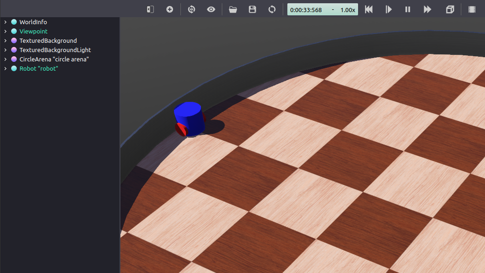

设置机器人仿真 (Webots) [待校准@7782]
Goal目标: Setup设置机器人仿真并从ROS 2进行控制。 [待校准@7783]
Tutorial教程级别: Advanced高级 [待校准@7203]
Time时间: 20 20分钟 [待校准@6741]
内容 [待校准@6275]
背景 [待校准@6276]
几个机器人模拟器可以与ROS 2一起使用，如Gazebo、点火、Webots等。与turtlesim不同，它们提供了相当现实的结果，依赖于机器人、传感器、致动器和物体的基于物理的模型。因此，您在仿真中观察到的与将ROS 2控制器转移到真正的机器人时将得到的非常接近。在本教程中，您将使用Webots机器人模拟器来设置和运行一个非常简单的ROS 2仿真场景。 [待校准@7784]
[需手动修复的语法] webots_ros2 包提供ROS 2和Webots之间的接口。它包括几个子包，但是在本教程中，您将只使用 webots_ros2_driver 子包来实现一个控制模拟机器人的Python插件。其他一些子包包含不同机器人的例程，如turtlebot3。它们记录在演示部分的 教程 [待校准@6242] 页面上。 [待校准@7785]
先决条件 [待校准@6278]
建议理解初级 教程 [待校准@6242] 所涵盖的基本ROS原理。特别是， 介绍turtlesim和rqt [待校准@8428] 、 理解ROS 2话题 [待校准@8368] 、 创建工作空间 [待校准@8836] 、 创建您的第一个ROS 2包 [待校准@6677] 和 创建launch文件 [待校准@7122] 是有用的先决条件。最后，您需要使用以下命令从终端安装 webots_ros2_driver : [待校准@7786]
sudo apt update
sudo apt install ros-foxy-webots-ros2-driver
# Install webots_ros2_driver and dependencies
cd \dev_ws
pip install rosinstall_generator
rosinstall_generator webots_ros2_driver --deps --exclude-path=C:\dev\ros2_foxy > deps.repos
vcs import src < deps.repos
# Build the packages
colcon build
# Source this workspace
call install\local_setup.bat
备注
如果你想安装整个 webots_ros2 包，请遵循以下 instructions 。 [待校准@7787]
任务 [待校准@6285]
1创建包结构 [待校准@7788]
让我们在自定义ROS 2包中组织代码。从ROS 2工作区的 src 文件夹中创建一个名为 my_package 的新包。将终端的当前目录更改为 dev_ws/src ，然后运行: [待校准@7789]
ros2 pkg create --build-type ament_python --node-name my_robot_driver my_package --dependencies rclpy geometry_msgs webots_ros2_driver
“ --node-name my_robot_driver ” 选项将在 “ my_package ” 子文件夹中创建一个 “ my_robot_driver.py ” 模板Python插件，您稍后将对其进行修改。 --dependencies rclpy geometry_msgs webots_ros2_driver 选项指定 my_robot_driver.py 插件在 package.xml 文件中需要的包。让我们添加 launch 和 worlds 文件夹 my_package 文件夹。 [待校准@7790]
cd my_package
mkdir launch
mkdir worlds
您应该以以下文件夹结构结束: [待校准@7791]
src/
└── my_package/
├── launch/
├── my_package/
│ ├── __init__.py
│ └── my_robot_driver.py
├── resource/
│ └── my_package
├── test/
│ ├── test_copyright.py
│ ├── test_flake8.py
│ └── test_pep257.py
├── worlds/
├── package.xml
├── setup.cfg
└── setup.py
2设置仿真世界 [待校准@7792]
你将需要世界包含机器人launch你仿真: 下载: Download this world file 移动内 my_package/worlds/ 。 [待校准@7793]
这实际上是一个相当简单的文本文件，您可以在文本编辑器中可视化。一个简单的机器人已经包含在这个 my_world.wbt 世界文件中。 [待校准@7794]
备注
如果你想学习如何在Webots中创建自己的机器人模型，你可以查看这个 tutorial 。 [待校准@7795]
3更改my_robot_driver.py文件 [待校准@7796]
[需手动修复的语法] webots_ros2_driver 子包自动调用y为大多数传感器创建ROS 2接口。在此任务中，您将通过更改 my_robot_driver.py 文件来扩展此接口。 [待校准@7797]
备注
本教程的目的是展示具有最少依赖项数量的基本示例。然而，你可以避免使用Python插件使用另一个 webots_ros2 子包 webots_ros2_control ，引入新的依赖。另一个子包装创建了一个与 ros2_control 包装的接口，便于控制不同的轮式机器人。 [待校准@7798]
在您最喜欢的编辑器中打开 my_package/my_package/my_robot_driver.py ，并将其内容替换为以下内容: [待校准@7799]
import rclpy
from geometry_msgs.msg import Twist
HALF_DISTANCE_BETWEEN_WHEELS = 0.045
WHEEL_RADIUS = 0.025
class MyRobotDriver:
def init(self, webots_node, properties):
self.__robot = webots_node.robot
self.__left_motor = self.__robot.getDevice('left wheel motor')
self.__right_motor = self.__robot.getDevice('right wheel motor')
self.__left_motor.setPosition(float('inf'))
self.__left_motor.setVelocity(0)
self.__right_motor.setPosition(float('inf'))
self.__right_motor.setVelocity(0)
self.__target_twist = Twist()
rclpy.init(args=None)
self.__node = rclpy.create_node('my_robot_driver')
self.__node.create_subscription(Twist, 'cmd_vel', self.__cmd_vel_callback, 1)
def __cmd_vel_callback(self, twist):
self.__target_twist = twist
def step(self):
rclpy.spin_once(self.__node, timeout_sec=0)
forward_speed = self.__target_twist.linear.x
angular_speed = self.__target_twist.angular.z
command_motor_left = (forward_speed - angular_speed * HALF_DISTANCE_BETWEEN_WHEELS) / WHEEL_RADIUS
command_motor_right = (forward_speed + angular_speed * HALF_DISTANCE_BETWEEN_WHEELS) / WHEEL_RADIUS
self.__left_motor.setVelocity(command_motor_left)
self.__right_motor.setVelocity(command_motor_right)
如您所见， MyRobotDriver 类实现了三种方法。 [待校准@7800]
第一个方法，命名为 “ init(self, ...), is actually the ROS node counterpart of the Python _ _ 初始化 _ _(self，...)” 构造函数。它首先获取机器人实例仿真 (可用于访问 `Webots robot API <https://cyberbotics.com/doc/reference/robot?tab-language=python>`_ )。然后，它获取两个电机实例，并用目标位置和目标速度初始化它们。最后，创建一个ROS节点，并为名为 ``/cmd_vel 的ROS话题注册一个调用方法，该话题将处理 Twist 消息。 [待校准@7801]
def init(self, webots_node, properties):
self.__robot = webots_node.robot
self.__left_motor = self.__robot.getDevice('left wheel motor')
self.__right_motor = self.__robot.getDevice('right wheel motor')
self.__left_motor.setPosition(float('inf'))
self.__left_motor.setVelocity(0)
self.__right_motor.setPosition(float('inf'))
self.__right_motor.setVelocity(0)
self.__target_twist = Twist()
rclpy.init(args=None)
self.__node = rclpy.create_node('my_robot_driver')
self.__node.create_subscription(Twist, 'cmd_vel', self.__cmd_vel_callback, 1)
然后是 “__cmd _ vel _ 调用” 的实现 (self，twist) ”调用私有方法，该方法将为在 /cmd_vel 话题上收到的每个 Twist 消息调用，并将其保存在 self.__target_twist 成员变量中。 [待校准@7802]
def __cmd_vel_callback(self, twist):
self.__target_twist = twist
最后，在仿真的每个时间步骤调用 step(self) 方法。需要调用 rclpy.spin_once() 来保持ROS节点的平稳运行。在每个时间步骤，该方法将从 self.__target_twist 中回收所需的 forward_speed 和 angular_speed 。当电机用角速度控制时，该方法将把 forward_speed 和 angular_speed 转换成每个轮子的单独指令。这种转换取决于机器人的结构，更具体地调用轮子的半径和它们之间的距离。 [待校准@7803]
def step(self):
rclpy.spin_once(self.__node, timeout_sec=0)
forward_speed = self.__target_twist.linear.x
angular_speed = self.__target_twist.angular.z
command_motor_left = (forward_speed - angular_speed * HALF_DISTANCE_BETWEEN_WHEELS) / WHEEL_RADIUS
command_motor_right = (forward_speed + angular_speed * HALF_DISTANCE_BETWEEN_WHEELS) / WHEEL_RADIUS
self.__left_motor.setVelocity(command_motor_left)
self.__right_motor.setVelocity(command_motor_right)
4创建my_robot.urdf文件 [待校准@7804]
现在，您必须创建一个URDF文件来声明 my_robot_driver.py Python插件。这将允许 webots_ros2_driver ROS节点launch插件。 [待校准@7805]
在 my_package/resource 文件夹中创建一个名为 my_robot.urdf 的文本文件，内容如下: [待校准@7806]
<?xml version="1.0" ?>
<robot name="My robot">
<webots>
<plugin type="my_package.my_robot_driver.MyRobotDriver" />
</webots>
</robot>
备注
这个简单的URDF文件不包含任何关于机器人的链接或联合信息，因为在本教程中不需要它。然而，URDF文件通常包含更多信息，如 URDF教程 [待校准@8607] 中所解释的。 [待校准@7807]
5创建launch文件 [待校准@7808]
让创建现在launch文件简易launch的仿真ROS控制器单命令。在 my_package/launch 文件夹中创建一个名为 robot_launch.py 的新文本文件，代码如下: [待校准@7809]
import os
import pathlib
import launch
from launch_ros.actions import Node
from launch import LaunchDescription
from ament_index_python.packages import get_package_share_directory
from webots_ros2_driver.webots_launcher import WebotsLauncher
def generate_launch_description():
package_dir = get_package_share_directory('my_package')
robot_description = pathlib.Path(os.path.join(package_dir, 'resource', 'my_robot.urdf')).read_text()
webots = WebotsLauncher(
world=os.path.join(package_dir, 'worlds', 'my_world.wbt')
)
my_robot_driver = Node(
package='webots_ros2_driver',
executable='driver',
output='screen',
parameters=[
{'robot_description': robot_description},
]
)
return LaunchDescription([
webots,
my_robot_driver,
launch.actions.RegisterEventHandler(
event_handler=launch.event_handlers.OnProcessExit(
target_action=webots,
on_exit=[launch.actions.EmitEvent(event=launch.events.Shutdown())],
)
)
])
[需手动修复的语法] WebotsLauncher 对象是一个自定义动作，允许您启动Webots仿真实例。您必须在构造函数中指定模拟器将打开哪个世界文件。 [待校准@7810]
webots = WebotsLauncher(
world=os.path.join(package_dir, 'worlds', 'my_world.wbt')
)
然后，创建与模拟机器人交互的ROS节点。这个名为 driver 的节点位于 webots_ros2_driver 包中。通过使用基于IPC和共享内存的自定义协议，节点将能够与模拟机器人通信。在您的情况下，您需要运行该节点的单个实例，因为仿真中只有一个机器人。但是，如果仿真中有更多的机器人，则每个机器人必须运行该节点的一个实例。的 robot_description 参数保存内容URDF文件指 my_robot_driver.py Python插件。 [待校准@7811]
my_robot_driver = Node(
package='webots_ros2_driver',
executable='driver',
output='screen',
parameters=[
{'robot_description': robot_description},
]
)
之后，在 LaunchDescription 构造函数中将这两个节点设置为launch: [待校准@7812]
return LaunchDescription([
webots,
my_robot_driver,
最后，添加了一个可选部分，以便在Webots终止后 (例如，当它从图形用户界面关闭时) 关闭所有节点。 [待校准@7813]
launch.actions.RegisterEventHandler(
event_handler=launch.event_handlers.OnProcessExit(
target_action=webots,
on_exit=[launch.actions.EmitEvent(event=launch.events.Shutdown())],
)
)
6修改setup.py文件 [待校准@7814]
最后，在启动launch文件之前，您必须修改 setup.py 文件以包括您添加的额外文件。打开 my_package/setup.py ，将其内容替换为: [待校准@7815]
from setuptools import setup
package_name = 'my_package'
data_files = []
data_files.append(('share/ament_index/resource_index/packages', ['resource/' + package_name]))
data_files.append(('share/' + package_name + '/launch', ['launch/robot_launch.py']))
data_files.append(('share/' + package_name + '/worlds', ['worlds/my_world.wbt']))
data_files.append(('share/' + package_name + '/resource', ['resource/my_robot.urdf']))
data_files.append(('share/' + package_name, ['package.xml']))
setup(
name=package_name,
version='0.0.0',
packages=[package_name],
data_files=data_files,
install_requires=['setuptools'],
zip_safe=True,
maintainer='user',
maintainer_email='user.name@mail.com',
description='TODO: Package description',
license='TODO: License declaration',
tests_require=['pytest'],
entry_points={
'console_scripts': [
'my_robot_driver = my_package.my_robot_driver:main',
],
},
)
这建立了这个包，并在 data_files 变量中添加了新添加的文件: my_world.wbt 、 my_robot.urdf 和 robot_launch.py 。 [待校准@7816]
7测试代码 [待校准@7817]
从ROS2工作区中的终端运行: [待校准@7818]
colcon build
source install/local_setup.bash
ros2 launch my_package robot_launch.py
colcon build
call install\local_setup.bat
ros2 launch my_package robot_launch.py
这将使仿真launch。Webots将在第一次运行时自动调用y，以防尚未安装。 [待校准@7819]
备注
如果你想手动安装Webots，你可以下载 here 。 [待校准@7820]
然后，打开第二个终端并发送以下命令: [待校准@7821]
ros2 topic pub /cmd_vel geometry_msgs/Twist "linear: { x: 0.1 }"
机器人正在向前移动。 [待校准@7822]

此时，机器人能够盲目地跟随你的马达命令。但是当你命令它前进时，它最终会撞到墙上。 [待校准@7823]
为了防止这种情况，让我们使用机器人的传感器来检测障碍物并避开它们。关闭Webots窗口，这也应该关闭从launcher开始的ROS节点。在第二个终端用 “ctrl + c” 关闭话题命令。 [待校准@7824]
8更新my_robot.urdf [待校准@7825]
您必须修改URDF文件以启用传感器。在 my_robot.urdf 中，将全部内容替换为: [待校准@7826]
<?xml version="1.0" ?>
<robot name="My robot">
<webots>
<device reference="ds0" type="DistanceSensor">
<ros>
<topicName>/left_sensor</topicName>
<alwaysOn>true</alwaysOn>
</ros>
</device>
<device reference="ds1" type="DistanceSensor">
<ros>
<topicName>/right_sensor</topicName>
<alwaysOn>true</alwaysOn>
</ros>
</device>
<plugin type="my_package.my_robot_driver.MyRobotDriver" />
</webots>
</robot>
ROS 2接口将解析参考距离传感器节点的 <device> 标签，并使用 <ros> 标签中的标准参数来启用传感器并命名它们的话题。 [待校准@7827]
9创建ROS节点以避免障碍 [待校准@7828]
机器人将使用一个标准的ROS节点来检测墙壁，并发送电机命令来避免它。在 my_package/my_package/ 文件夹中创建一个名为 obstacle_avoider.py 的文件，代码如下: [待校准@7829]
import rclpy
from rclpy.node import Node
from sensor_msgs.msg import Range
from geometry_msgs.msg import Twist
MAX_RANGE = 0.15
class ObstacleAvoider(Node):
def __init__(self):
super().__init__('obstacle_avoider')
self.__publisher = self.create_publisher(Twist, 'cmd_vel', 1)
self.create_subscription(Range, 'left_sensor', self.__left_sensor_callback, 1)
self.create_subscription(Range, 'right_sensor', self.__right_sensor_callback, 1)
def __left_sensor_callback(self, message):
self.__left_sensor_value = message.range
def __right_sensor_callback(self, message):
self.__right_sensor_value = message.range
command_message = Twist()
command_message.linear.x = 0.1
if self.__left_sensor_value < 0.9 * MAX_RANGE or self.__right_sensor_value < 0.9 * MAX_RANGE:
command_message.angular.z = -2.0
self.__publisher.publish(command_message)
def main(args=None):
rclpy.init(args=args)
avoider = ObstacleAvoider()
rclpy.spin(avoider)
# Destroy the node explicitly
# (optional - otherwise it will be done automatically
# when the garbage collector destroys the node object)
avoider.destroy_node()
rclpy.shutdown()
if __name__ == '__main__':
main()
该节点将为该命令创建一个发布服务器，并在此订阅传感器话题: [待校准@7830]
self.__publisher = self.create_publisher(Twist, 'cmd_vel', 1)
self.create_subscription(Range, 'left_sensor', self.__left_sensor_callback, 1)
self.create_subscription(Range, 'right_sensor', self.__right_sensor_callback, 1)
当从左侧传感器接收到测量时，它将被复制到成员字段: [待校准@7831]
def __left_sensor_callback(self, message):
self.__left_sensor_value = message.range
最后，当接收到来自正确传感器的测量时，一条信息将被发送到 /cmd_vel 话题。在没有检测到障碍物时，为了使机器人移动， command_message 将记录至少一个 linear.x 前进速度。如果两个传感器中的任何一个检测到障碍物， command_message 也将在 angular.z 中记录转速，以使机器人右转。 [待校准@7832]
def __right_sensor_callback(self, message):
self.__right_sensor_value = message.range
command_message = Twist()
command_message.linear.x = 0.1
if self.__left_sensor_value < 0.9 * MAX_RANGE or self.__right_sensor_value < 0.9 * MAX_RANGE:
command_message.angular.z = -2.0
self.__publisher.publish(command_message)
10更新设置。py和机器人 _ launch。py [待校准@7833]
您必须将这两个其他文件修改为您的新节点launch。编辑 setup.py ，并将 “'console_scripts'” 替换为: [待校准@7834]
'console_scripts': [
'my_robot_driver = my_package.my_robot_driver:main',
'obstacle_avoider = my_package.obstacle_avoider:main'
],
这将为 obstacle_avoider 节点增加一个入口点。 [待校准@7835]
转到文件 robot_launch.py ，并将 “def生成 _ launch _ 描述 ():” 替换为: [待校准@7836]
def generate_launch_description():
package_dir = get_package_share_directory('my_package')
robot_description = pathlib.Path(os.path.join(package_dir, 'resource', 'my_robot.urdf')).read_text()
webots = WebotsLauncher(
world=os.path.join(package_dir, 'worlds', 'my_world.wbt')
)
my_robot_driver = Node(
package='webots_ros2_driver',
executable='driver',
output='screen',
parameters=[
{'robot_description': robot_description},
]
)
obstacle_avoider = Node(
package='my_package',
executable='obstacle_avoider',
)
return LaunchDescription([
webots,
my_robot_driver,
obstacle_avoider,
launch.actions.RegisterEventHandler(
event_handler=launch.event_handlers.OnProcessExit(
target_action=webots,
on_exit=[launch.actions.EmitEvent(event=launch.events.Shutdown())],
)
)
])
这将创建一个 obstacle_avoider 节点，该节点将包含在 LaunchDescription 中。 [待校准@7837]
11测试避障代码 [待校准@7838]
作为任务 7 ，launch的仿真终端的ROS 2工作区: [待校准@7839]
colcon build
source install/local_setup.bash
ros2 launch my_package robot_launch.py
colcon build
call install\local_setup.bat
ros2 launch my_package robot_launch.py
你的机器人应该前进，在撞到墙上之前，它应该顺时针旋转。您可以在Webots中按 “ctrl + F10” 或转到 View 菜单， Optional Rendering 和 Show DistanceSensor Rays 显示机器人距离传感器的范围。 [待校准@7840]

总结 [待校准@6307]
在本教程中，您将使用Webots设置逼真的机器人仿真，实现Python插件以控制机器人的电机，并使用传感器实现ROS节点以避免障碍物。 [待校准@7841]